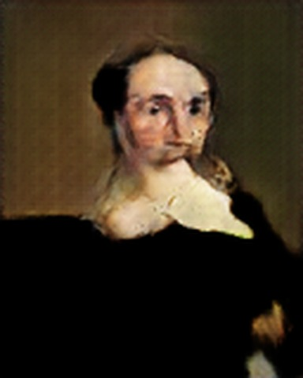
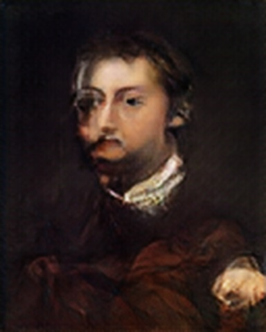
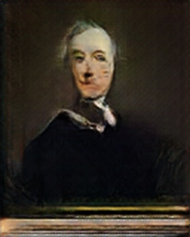
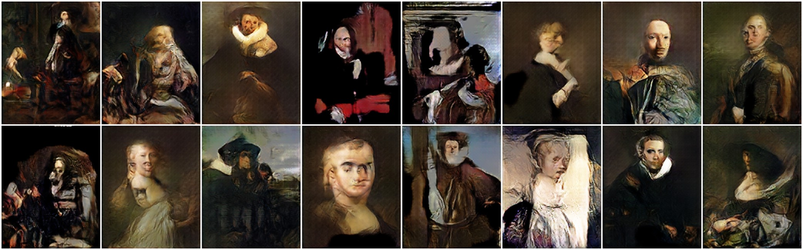
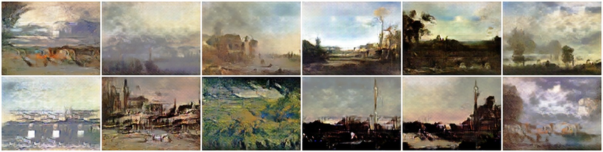
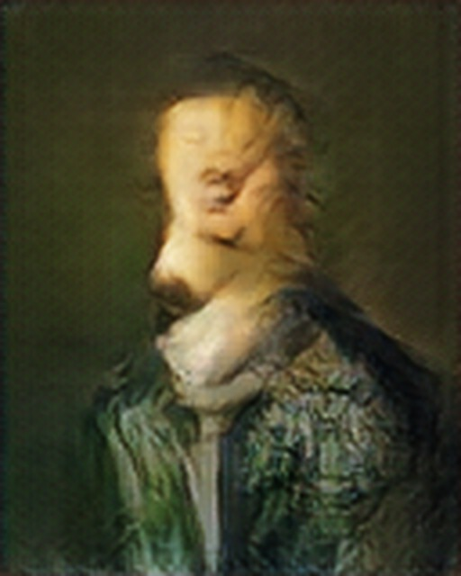

La Plateforme_ · M2 · octobre 2026
GANisme
Un portrait a disparu du musée. Peut-on en peindre un autre sans que personne le remarque ?
Romuald Courtois — générer des peintures avec un réseau antagoniste génératif (GAN)
Trois personnages, trois rôles

Il connaît les vrais tableaux. Il juge chaque essai.

Il n'a jamais vu un vrai tableau. Il peint.

Il n'est pas dans la combine. Il mesure.
Il me faut un portrait dans ce cadre avant l'inauguration. Personne ne se souvient du tableau : il doit seulement avoir l'air vrai.
Je n'ai jamais vu un seul de vos tableaux. — Tant mieux. Vous peindrez, je jugerai.
Ces trois portraits ont été générés par le modèle 128×160 du projet.
Vrai ou faux ?
Quatre de ces huit portraits sont accrochés dans des musées. Les quatre autres n'ont jamais existé.
Les quatre faux sont choisis parmi les plus réussis du modèle. La suite montre ce qu'il produit en moyenne, et comment je le mesure.
La mission, et le plan de la visite
Le sujet : entraîner un GAN à générer des peintures à partir du catalogue de la Web Gallery of Art, sans aucune description en entrée.
Un GAN est un duel entre deux réseaux
tirés au hasard
↩ La critique revient au Faussaire sous forme de gradient : c'est sa seule source d'information.
Ce que chacun cherche
- D veut bien classer : 1 pour le vrai, 0 pour le faux.
- G veut que D se trompe. En pratique il maximise log D(G(z)) : la perte « non saturante », qui garde un gradient fort même quand D rejette tout.
Ce que chacun reçoit
- G ne reçoit que z. Il ne voit jamais une vraie image.
- D reçoit une image, vraie ou fausse, et rend un score.
- À chaque itération : on met à jour D sur un lot de vraies et un lot de fausses, puis G à travers D.
Tant que je vois la différence, vous recommencez.
Un équilibre fragile, et un choix : DCGAN
Discriminateur trop fort
Le Conservateur trop sévère
D rejette tout : le Faussaire ne reçoit plus de critique utile.
Mode collapse
Vingt fois le même tableau
Une image passe, G la répète : la diversité disparaît.
Mémorisation
Le tableau décroché du mur d'à côté
Avec 3 448 portraits seulement, G peut finir par recopier.
Les variantes
| cGAN | une étiquette donnée à G et à D : générer une classe à la demande |
| DCGAN | des convolutions à la place des couches denses : base de ce projet |
| WGAN-GP | une autre mesure de distance, pour un entraînement plus stable |
| CycleGAN | traduire une image d'un style à l'autre, sans paires |
| StyleGAN | le style contrôlé à chaque échelle : visages en haute résolution |
Pourquoi DCGAN
- Simple, explicable couche par couche.
- Moins d'une demi-heure par entraînement sur un portable.
- Sert d'étalon : chaque ajout est mesuré séparément.
Les 15 questions de la veille (familles de modèles, dangers, intérêt) sont dans le document écrit et dans les réserves.
Trois façons d'échouer, et les pertes ne disent rien. C'est pour cela que vous aurez affaire à moi.
Une famille à part parmi les modèles génératifs
| Famille | Ce qu'elle apprend | Force | Faiblesse | Exemple |
|---|---|---|---|---|
| GAN | densité implicite : sait produire un échantillon, pas calculer p(x) | images nettes, génération en une seule passe | entraînement instable, mode collapse | StyleGAN |
| VAE | densité explicite, approchée | entraînement stable, espace latent structuré | images floues | — |
| Diffusion | retirer du bruit, pas à pas | qualité et diversité | génération lente | Stable Diffusion, DALL·E |
| Transformer autorégressif | densité explicite, élément après élément | texte, longues dépendances | génération séquentielle | GPT (OpenAI) |
Discriminant ou génératif ?
Discriminant : apprend p(y | x). « Ce tableau est-il vrai ? » C'est le Conservateur.
Génératif : apprend p(x). « À quoi ressemble un tableau ? » C'est le Faussaire.
Un GAN contient les deux, et entraîne le second grâce au premier.
Un équilibre difficile à tenir
Discriminateur trop fort
Le Conservateur trop sévère
D gagne trop vite et rejette tout. Le gradient transmis à G devient inutilisable : le Faussaire n'apprend plus rien.
Illustré par mon essai n°1.
Mode collapse
Vingt fois le même tableau
G trouve une image qui passe, et la répète. La qualité semble bonne, la diversité a disparu.
Simulé dans mes tests de métriques.
Mémorisation
Le tableau décroché du mur d'à côté
Avec peu de données, D apprend les images par cœur et G finit par les recopier. Avec 3 448 portraits, le risque est réel.
Contrôlé par un test dédié.
L'équilibre visé (équilibre de Nash) : D ne sait plus trancher, D(x) = D(G(z)) = 0,5. Les pertes n'indiquent pas la qualité des images : elles peuvent osciller sans que rien ne s'améliore. Il faut des mesures extérieures au duel.
C'est pour cela que vous aurez affaire à moi.
Les variantes, et celle que j'ai retenue
| Variante | Idée | Application |
|---|---|---|
| cGAN (2014) | on fournit une étiquette à G et à D | générer une classe à la demande |
| DCGAN (2015) | convolutions, BatchNorm, pas de pooling | base de ce projet |
| WGAN-GP (2017) | distance de Wasserstein à la place de la BCE | entraînement plus stable |
| CycleGAN (2017) | traduction d'images sans paires | photo → style d'un peintre |
| StyleGAN (2018-2021) | contrôle du style à chaque échelle | visages en haute résolution |
DCGAN contre GAN d'origine : des couches de convolution à la place des couches denses, ce qui rend l'entraînement sur images praticable.
Pourquoi DCGAN
- Simple et entièrement explicable, couche par couche.
- Un entraînement en 64×80 tient en moins d'une demi-heure sur un portable (8 Go de mémoire graphique).
- Il sert d'étalon : chaque ajout est mesuré séparément.
Non testés : WGAN-GP, StyleGAN2-ADA, ProGAN, cGAN.
Pourquoi générer, et à quel prix ?
L'intérêt
- Produire des données là où elles manquent : cas rares, classes sous-représentées.
- Partager des données sans exposer les originaux (vie privée).
- Outil de création : un espace d'images à explorer.
- Savoir générer suppose d'avoir capté la structure des données.
Les dangers
- Deepfakes, fraude, désinformation.
- Droit d'auteur : mes images viennent d'un site tiers, je ne les redistribue pas.
- Biais : le modèle reproduit ceux du corpus.
- Mémorisation des données d'entraînement : testée dans ce projet.
- Coût énergétique des entraînements.
Le plan est clair. Montrez-moi ce que contient votre musée.
Le catalogue du musée : propre en apparence seulement
Web Gallery of Art
- 3 663 peintres, 26 écoles, 10 genres.
- Aucune image dans le fichier : seulement des liens.
| Ce que j'ai trouvé | Exemple | Ce que j'ai fait |
|---|---|---|
| Aucune valeur manquante… en apparence | 4 800 dates notées « - » (9 %) | converties en valeurs manquantes |
| Erreurs de saisie | 162628 pour 1626-28 | corrigées, texte d'origine conservé |
| Peintures qui n'en sont pas | 154 « peintures » en marbre, bronze ou photo | repérées par la technique |
| Information cachée dans le texte | « Oil on canvas, 81 x 65 cm » | technique et dimensions extraites : le format de chaque tableau |
Tout est dans le registre. Enfin… presque tout.
Un corpus biaisé, et deux pièges pour un GAN
Le biais
Religieux 42 %, portrait 15 %, paysage 13 % ; école italienne 42 % ; 65 % des XVᵉ-XVIIᵉ siècles.
Décision : un modèle par genre, en commençant par les portraits.
Piège n°1 · les quasi-doublons
18 % des peintures sont des détails d'une même œuvre. Vue plusieurs fois, elle serait recopiée : je les retire.
Piège n°2 · les formats
Seulement 4 % de tableaux carrés : le recadrage carré habituel perdrait 24 % de la surface.
Le catalogue du musée
Web Gallery of Art
- 3 663 peintres, 26 écoles, 10 genres.
- Pour chaque œuvre : auteur, titre, date, technique, lieu, école, genre, adresse de la page.
- Aucune image dans le fichier : seulement des liens.
Tout est dans le registre. Enfin… presque tout.
Propre en apparence seulement
| Ce que j'ai trouvé | Exemple | Ce que j'ai fait |
|---|---|---|
| Aucune valeur manquante… en apparence | 4 800 dates notées « - » (9 %) | valeurs sentinelles converties en valeurs manquantes |
| Types mélangés | colonne des dates : nombres et texte | analyse du texte, année extraite |
| Erreurs de saisie | 162628 pour 1626-28 ; un décès en 19801 | corrigées ou neutralisées, texte d'origine conservé |
| Peintures qui n'en sont pas | 154 « peintures » en marbre, bronze ou photographie | repérées par la technique |
| Information cachée dans le texte | « Oil on canvas, 81 x 65 cm » | technique, support, hauteur et largeur extraits par expressions régulières |
Ce que ça apporte
Les dimensions réelles des tableaux donnent leur format avant même de télécharger une image.
C'est ce qui permettra de choisir un cadrage par genre.
47 % des œuvres n'ont pas de dimensions renseignées : le format sera vérifié ensuite sur les images.
Un corpus très biaisé
Trois déséquilibres
- Genres : religieux 42 %, portrait 15 %, paysage 13 %.
- Écoles : italienne 42 % ; les cinq premières font 87 %.
- Époques : 65 % des XVᵉ-XVIIᵉ siècles, rien après 1900.
Un GAN apprend ce que contient le corpus. Entraîné sur tout, il apprendrait « la peinture religieuse italienne de la Renaissance ».
Décision : un modèle par genre, en commençant par les portraits, le genre le plus régulier (90 % de formats verticaux).
Deux pièges pour un GAN
Piège n°1 · les quasi-doublons
18 % des peintures sont des détails ou des vues multiples d'une même œuvre : jusqu'à 37 lignes pour une seule fresque de Giotto.
Vue plusieurs fois, une œuvre pousse le modèle à la recopier. Je les retire.
Piège n°2 · les formats
55 % de tableaux verticaux, 41 % d'horizontaux, 4 % de carrés.
Le recadrage carré, habituel pour les GAN, ferait perdre 24 % de la surface en médiane.
Regarder les 32 437 images
La collecte
32 437 images sur 32 438, en 400 pixels de côté (650 Mo), avec reprise automatique après interruption.
Ce que le catalogue ne disait pas
- Des photographies d'architecture rangées parmi les peintures.
- Des images en noir et blanc ou monochromes.
- Des tableaux photographiés sur un fond de studio, avec leur cadre.
- Des fresques prises dans leur bâtiment, avec les murs autour.
Chaque constat devient un filtre, mesuré sur les images elles-mêmes.
L'entonnoir : de 32 438 peintures à 3 448 portraits
Il me reste 3 448 portraits pour apprendre. C'est peu.
Un format par genre, une augmentation adaptée
Surface perdue au recadrage
| Carré centré | 25 % |
| Portraits en 4:5 (64×80, 128×160) | 4,9 % |
| Paysages en 4:3 (64×48, 128×96) | 7,1 % |
Le jeu final
3 448 portraits d'entraînement, 384 de test jamais montrés. Pas de validation : dans un GAN, le suivi se fait au FID.
L'augmentation
Miroir horizontal, et DiffAugment : couleur et translation appliquées aux vraies et aux fausses images, pour que le Faussaire ne les recopie pas.
Un format par genre, pas un carré
Surface perdue au recadrage (médiane)
| Carré centré | 25 % |
| Portraits en 4:5 | 4,9 % |
| Paysages en 4:3 | 7,1 % |
Portraits en 64×80 puis 128×160, paysages en 64×48 puis 128×96. Le cadrage des portraits est remonté vers le haut pour garder les visages.
Écart assumé par rapport au guide fourni, qui recommande le carré. Son but, ne pas déformer les images, est respecté.
Le jeu d'entraînement, et l'augmentation
Les effectifs
Séparation par œuvre : un tableau et ses détails ne sont jamais des deux côtés. Pas de jeu de validation : dans un GAN, aucune perte ne mesure la qualité ; le suivi se fait au FID.
Une augmentation adaptée aux GAN
- Miroir horizontal sur la moitié des images.
- DiffAugment : couleur et translation aléatoires, appliquées aux vraies et aux fausses images. Sinon le Faussaire apprendrait à peindre des tableaux décalés.
Le jeu reste à 3 448 fichiers ; le discriminateur en voit environ 4,1 millions de versions en 600 époques.
L'Inspecteur compare deux collections
utilisé comme instrument
Se ressemblent-elles ?
FID
Distance entre les deux nuages. Plus bas = mieux. Mon critère principal.
Ont-elles l'air vraies ?
Précision
Part des images générées proches d'une vraie peinture.
Toute la variété est-elle là ?
Rappel
Part des vraies peintures qui ont une image générée proche.
A-t-il recopié ?
Mémorisation
Distance au tableau d'entraînement le plus proche, comparée à celle d'un vrai tableau jamais vu.
Je ne juge pas un tableau. Je compare deux collections, toujours avec le même protocole.
L'Inspecteur ne regarde pas les pixels
utilisé comme instrument
Le principe
Comparer deux images pixel à pixel n'a pas de sens : un portrait décalé de deux pixels serait « très différent ». On compare donc des descriptions d'images, et surtout deux collections, pas deux tableaux.
Mon protocole, identique pour tous les modèles
- Autant d'images générées que d'images d'entraînement.
- Les mêmes vecteurs latents d'un modèle à l'autre.
- Une évaluation toutes les 25 époques ; je garde le meilleur point.
Je ne juge pas un tableau. Je compare deux collections.
Trois questions, trois mesures
Les deux collections se ressemblent-elles ?
Le FID, critère principal
Chaque nuage est résumé par sa moyenne μ et sa covariance Σ. Plus bas = mieux, 0 si les deux collections sont identiques.
Il mélange qualité et diversité en un seul nombre : il dit si ça va, pas pourquoi.
Les images ont-elles l'air vraies ?
La précision
Part des images générées qui tombent à proximité d'une vraie image (dans le voisinage de ses 5 plus proches voisines).
Toute la variété est-elle là ?
Le rappel
Part des vraies images qui ont une image générée à proximité.
Densité et couverture en sont des versions plus robustes aux images aberrantes.
Étalonner la balance avant de peser
Avant d'entraîner quoi que ce soit, je fabrique des générateurs dont je connais le défaut. Une mesure fiable doit les classer dans l'ordre.
Qualité ou diversité ?
Ce que le FID confond
Le mode collapse (FID 196) et le flou fort (FID 203) ont presque le même score.
La carte les sépare : le premier est précis mais sans diversité (précision 1,00, rappel 0,01), le second n'a ni l'un ni l'autre.
C'est avec cette carte que je diagnostique chaque modèle.
Trois pièges, mesurés sur mes données
Inception Score
Il ne distingue rien sur de la peinture
Le flou passe devant le réel. Il repose sur les 1 000 classes d'ImageNet et ne regarde jamais les vraies images. Calculé, jamais utilisé.
FID
Il ne se lit qu'avec son nombre d'images
La même copie du réel vaut 0 ou 49 selon l'effectif. À effectif égal, mon modèle est à 97,5 contre 57,6 pour le réel.
KID (×1000)
Il laisse passer le mode collapse
Vingt images répétées obtiennent un meilleur KID que mon modèle final. Il ne se lit qu'avec le rappel.
A-t-il décroché un vrai tableau ?
Le test de mémorisation
Pour chaque image générée, je mesure la distance à l'image d'entraînement la plus proche. Je la compare à la même distance pour les 384 vraies peintures jamais vues.
- Rapport ≈ 1 : le modèle invente.
- Rapport très inférieur à 1 : il recopie.
Résultat pour le modèle final
Sans ce test, une copie du jeu d'entraînement serait le « meilleur modèle » : FID 0, précision 1, rappel 1.
Un score parfait ne me suffit pas. Je vérifie toujours d'où vient le tableau.
L'atelier du Faussaire et l'œil du Conservateur
Générateur · 3,8 millions de paramètres
BatchNorm
ReLU
Tanh
Discriminateur · 2,8 millions de paramètres
LeakyReLU 0,2
Le format 4:5 est construit dès la première couche : la grille de départ est 5×4 (hauteur × largeur), et 3×4 pour les paysages. Chaque couche double la taille et divise les canaux par deux.
Le duel, essai par essai
Trop sévère, puis trop mou. On ne trouvera jamais le bon rythme à la main. — Alors on répète. Trente fois.
Trois réglages à la main, trois déséquilibres
| Essai | Une seule idée ajoutée | FID | Précision | Rappel | Diagnostic |
|---|---|---|---|---|---|
| n°1 | DCGAN de l'article d'origine | 130 | 0,37 | 0,07 | discriminateur trop fort |
| n°2 | + DiffAugment | 116 puis 340 | 0,51 | 0,11 | meilleur, mais instable |
| n°3 | + normalisation spectrale, perte hinge | 198 | 0,17 | 0,00 | discriminateur trop faible |
Ce que j'en tire
Chaque outil fonctionne, mais mal dosé. Le problème n'est pas l'architecture : c'est le rythme entre les deux réseaux (vitesses d'apprentissage, nombre de mises à jour, taille de lot).
La suite logique
Neuf réglages qui interagissent : impossible à explorer à la main, à 25 minutes l'essai. Je confie la recherche à Optuna.
Trop sévère, puis trop mou. On ne trouvera jamais le bon rythme à la main.
Alors on répète. Trente fois.
Trente répétitions, puis une confirmation
L'étude Optuna
30 essais de 300 époques, 9 réglages explorés. Objectif : le FID moyen des 3 dernières évaluations, pour pénaliser les effondrements.
Ce qui compte, et le réglage retenu
| Taille de lot (52 % de l'effet) | 64 |
| Mises à jour de D pour 1 de G (22 %) | 2 |
| Adam β₁ (11 %) | 0 |
| Discriminateur | normalisation spectrale |
Confirmé sur 3 graines, 600 époques
56,0 · 54,5 · 59,0 — moyenne 56,5 ± 2,3. Un meilleur essai isolé peut être un coup de chance.
Trente répétitions : l'étude Optuna
Le protocole
- Algorithme TPE : chaque essai tient compte des précédents.
- 30 essais de 300 époques ; 6 arrêtés tôt car mal partis.
- Objectif : FID moyen des 3 dernières évaluations, pour pénaliser les effondrements.
- 9 réglages explorés : perte, normalisation spectrale, vitesses de G et de D, β₁, β₂, mises à jour de D, DiffAugment, taille de lot.
7 h 30 de calcul. Les essais 0 et 1 rejouent mes essais manuels, comme points de repère.
Ce qui compte vraiment
Part de la variation du FID expliquée par chaque réglage
Estimation fANOVA sur les 30 essais. L'effet de la taille de lot est en partie mécanique : un lot deux fois plus petit donne deux fois plus de mises à jour par époque.
Le réglage retenu (essai n°26)
| Taille de lot | 64 |
| Mises à jour de D pour 1 de G | 2 |
| Adam β₁ / β₂ | 0 / 0,999 |
| Vitesse de G / de D | 3,0·10⁻⁴ / 5,0·10⁻⁴ |
| Discriminateur | normalisation spectrale |
| Perte | BCE non saturante |
| DiffAugment | couleur + translation |
β₁ = 0 dans les 12 meilleurs essais : dans un duel, la cible bouge à chaque pas, et l'inertie d'Adam entretient les oscillations.
Confirmer avant d'annoncer
Pourquoi
Le meilleur essai d'une recherche est toujours en partie chanceux. Je réentraîne les deux meilleurs réglages sur 3 graines et 600 époques.
| Réglage | FID à 600 époques |
|---|---|
| retenu | 56,0 · 54,5 · 59,0 |
| sans norm. spectrale | 60,2 · 60,8 · 71,8 |
Moyenne 56,5 ± 2,3 pour le réglage retenu : c'est le chiffre représentatif. La normalisation spectrale n'améliore pas le record, elle rend le résultat régulier : sans elle, une graine s'effondre à plusieurs reprises (pics coupés à 130).
Le chevalet : du bruit au portrait
Les six mêmes points de départ aléatoires, du premier coup de pinceau à l'époque 600.
Le verdict de la balance
Modèle final : précision 0,62 · rappel 0,28 · mémorisation 1,11 · 0 % de copies. Un duel équilibré : D(x) ≈ 0,52 et D(G(z)) ≈ 0,49.
54,5. Entre la copie parfaite et le flou léger. Je note.
Plus grand, et ailleurs : le réglage se transfère

Portraits en 128×160 · une couche de plus
Mesuré en 64×80 : FID 54,5 → 41,1.

Paysages · mêmes hyperparamètres, sans nouvelle recherche
FID 79,8 → 42,3, puis 37,7 en 128×96.
Images non triées. Chaque genre et chaque résolution a sa propre échelle ; ces modèles n'ont été entraînés que sur une graine.
Si le portrait ne convainc pas, nous dirons que c'était un paysage.
Le modèle final : un duel enfin équilibré
Portraits 64×80 · époque 600
| FID | 54,5 |
| FID à effectif égal | 97,5 |
| KID ×1000 | 37,3 |
| Précision | 0,62 |
| Rappel | 0,28 |
| Densité | 0,61 |
| Couverture | 0,54 |
| Mémorisation | 1,11 |
| Copies | 0 % |
Deux fois plus grand : 128×160
Seize portraits non triés (graine 2024).
Même réglage, une couche de plus
5 doublements au lieu de 4 ; 13,2 millions de paramètres pour le générateur.
| Mesuré en 64×80 | FID |
|---|---|
| Modèle 64×80 | 54,5 |
| Modèle 128×160, images réduites | 41,1 |
Son FID en taille réelle est de 71,1 : il ne se compare pas à 54,5, chaque résolution a sa propre échelle. Résultat sur une seule graine.
Et les paysages ?
Douze paysages non triés (graine 2024), 2 714 images d'entraînement.
Le réglage se transfère-t-il ?
Je reprends les hyperparamètres des portraits tels quels, sans nouvelle recherche.
| Mesuré en 64×48 | FID |
|---|---|
| DCGAN de base | 79,8 |
| Réglage des portraits | 42,3 |
| En 128×96, images réduites | 37,7 |
Le réglage n'est donc pas propre aux portraits. Ces scores ne se comparent pas à ceux des portraits : chaque genre a sa propre échelle.
Si le portrait ne convainc pas, nous dirons que c'était un paysage.
Un espace de peintures, pas une collection
Chaque tableau est un point d'un espace à 100 dimensions. En glissant d'un point à un autre, l'image se transforme sans rupture.
L'accrochage : démonstration en direct
Ouvrir l'application ↗ganisme-romu.streamlit.app · quatre modèles (portraits et paysages, 64 et 128 pixels), sans GPU. En secours : streamlit run app.py en local.
Le soir de l'inauguration

Joli cadre. À nombre d'images égal, ce tableau obtient 97,5. Un vrai : 57,6. Suivez-moi, tous les deux.
Les limites, dites sans détour
- Visages souvent déformés : en 64×80, un visage tient sur une quinzaine de pixels.
- Diversité loin du réel : rappel 0,28, contre 0,79 pour de vraies peintures jamais vues.
- Convergence non atteinte : plusieurs modèles progressaient encore à 600 époques.
- Peu de répétitions : une seule graine pour les modèles 128 pixels et les paysages.
- Corpus biaisé : peinture européenne du XVᵉ au XIXᵉ siècle.
- Mesures indirectes : tout repose sur Inception-v3 ; pas d'évaluation humaine.
Le bilan de l'enquête
L'équilibre avant l'architecture
FID, à architecture identique.
Un gain reproductible
FID moyen sur 3 graines.
Un réglage qui se transfère
Paysages, sans nouvelle recherche.
Inventé, pas copié
D'images suspectes de copie.
Seul, mais traçable
- 10 notebooks numérotés, un par étape ; modules réutilisables dans
src/. - Chaque entraînement enregistre sa configuration, ses courbes et ses scores, et peut être repris après interruption.
- Une idée par modèle ; confirmation sur 3 graines ; journal des erreurs.
- Dépôt GitHub public, application en ligne.
La suite
- Entraîner plus longtemps : les courbes descendaient encore.
- Répéter les modèles 128 pixels et paysages sur plusieurs graines.
- Une architecture plus récente pour les visages ; un GAN conditionnel sur le genre.
- Une évaluation humaine, indépendante d'Inception.
La prochaine fois, donnez-moi plus de 600 époques.
Ce que l'enquête retient
1 · L'équilibre avant l'architecture
Les leviers : taille de lot, deux mises à jour de D, β₁ = 0.
2 · Un gain reproductible
Le meilleur essai seul aurait été un résultat chanceux.
3 · Un réglage qui se transfère
Et en 128 pixels : 54,5 → 41,1 pour les portraits, à résolution de mesure égale.
4 · Des images inventées, pas copiées
Rapport de mémorisation entre 0,96 et 1,11 pour les quatre modèles.
Du catalogue brut de 52 867 œuvres à quatre générateurs évalués, avec leur application en ligne.
Seul, mais traçable
Sans équipe, personne ne relit. La rigueur vient donc des garde-fous.
Découpage
10 notebooks numérotés, un par étape, chacun avec ses conclusions.
Code
Modules réutilisables dans src/, séparés des analyses ; code en anglais.
Traçabilité
Chaque entraînement enregistre sa configuration, ses courbes et ses scores.
Méthode
Une idée par modèle ; critères de réussite fixés avant ; chiffres vérifiés avant d'être écrits.
Reprise
Entraînements interruptibles : la même commande reprend là où le calcul s'est arrêté.
Suivi et livrables
Journal d'avancement et des erreurs ; dépôt GitHub public ; application en ligne.
Deux erreurs corrigées en cours de route : une comparaison de FID à effectifs différents, rectifiée par l'ajout du FID à effectif égal ; une estimation de durée fausse (5,6 s par époque prévues, 13,8 mesurées en 128×160).
Si c'était à refaire, et la suite
Ce que j'en retiens
- Mesurer avant d'entraîner. L'échelle de référence a rendu chaque score lisible.
- Une idée à la fois. Chaque gain et chaque échec a une cause identifiée.
- Confirmer avant d'annoncer. Trois graines plutôt qu'un record.
- Un GAN se règle plus qu'il ne se conçoit. Les hyperparamètres ont divisé le FID par plus de deux.
Les pistes
- Entraîner plus longtemps : les courbes descendaient encore.
- Répéter les modèles 128 pixels et paysages sur plusieurs graines.
- Une recherche Optuna dédiée au 128 pixels.
- Une architecture plus récente (StyleGAN2-ADA, attention) pour les visages.
- Un GAN conditionnel sur le genre ; l'art abstrait proposé par le sujet.
- Une évaluation humaine, indépendante d'Inception.
La prochaine fois, donnez-moi plus de 600 époques.
Merci.
Des questions ?
Application : ganisme-romu.streamlit.app
Code, notebooks et résultats : github.com/Hierogifle/ganisme
R ouvre les réserves · M le plan · B revient à cet écran
Les réserves
Écrans de secours pour les questions. R ramène à ce sommaire, B à l'écran quitté.
Lexique : les notations et les mots du projet
| Notation | Ce que c'est |
|---|---|
| G | le générateur : le réseau qui fabrique les images (le Faussaire) |
| D | le discriminateur : le réseau qui juge si une image est vraie (le Conservateur) |
| z | 100 nombres tirés au hasard : le point de départ d'une image |
| G(z) | l'image fabriquée par G à partir de z : un faux tableau |
| x | une vraie peinture du jeu d'entraînement |
| D(x) | la note que D donne à une vraie peinture, entre 0 (faux) et 1 (vrai) |
| D(G(z)) | la note que D donne à un faux tableau |
| Équilibre | D(x) = D(G(z)) = 0,5 : D ne fait pas mieux que le hasard |
| Mot | Ce que c'est |
|---|---|
| Lot (batch) | le paquet d'images traité à chaque mise à jour des poids : 64 ici |
| Itération | une mise à jour de G (précédée de 2 mises à jour de D) |
| Époque | un passage sur les 3 448 images : 53 itérations |
| Convolution | un petit filtre glissé sur toute l'image, au lieu d'un poids par pixel |
| BatchNorm | recentre les sorties d'une couche à l'aide des statistiques du lot |
| Doublement | une couche de G qui double hauteur et largeur : 5×4 → 80×64 en 4 fois |
| Adam β₁ / β₂ | mémoire de la direction des gradients / de leur amplitude |
| Normalisation spectrale | limite la force de chaque couche de D pour que sa note varie en douceur |
La veille : questions 1 à 8
| Q | Sujet | Le point à énoncer | Dans le projet |
|---|---|---|---|
| 1 | Problématique visée | Modélisation générative non supervisée. Efficace aussi en traduction d'image, super-résolution, semi-supervisé ; faible sur le texte. | génération d'images |
| 2 | Fonctionnement | Jeu minimax entre G et D. À l'optimum, D* = pdata / (pdata + pg). | la boucle de src/train.py |
| 3 | Rôles ; discriminant ou génératif | G : bruit → image. D : classifieur qui sert de fonction de perte apprise. Discriminant = P(y|x), génératif = P(x). | le Faussaire et le Conservateur |
| 4 | Entrées | G reçoit z ~ N(0, I), de dimension 100. D reçoit des images réelles (cible 1) et générées (cible 0), au même format. | images dans [−1, 1] |
| 5 | Densité implicite | On peut tirer un échantillon, pas calculer p(x). | d'où le FID plutôt qu'une vraisemblance |
| 6 | Rétropropagation | Deux mises à jour alternées. Le gradient de G traverse D sans modifier les poids de D. | 2 mises à jour de D pour 1 de G |
| 7 | Évaluation | FID, Inception Score, précision et rappel, évaluation humaine, interpolations, plus proches voisins. | salle 4 ; l'IS est inadapté ici |
| 8 | Quantité de données | De quelques milliers à quelques dizaines de milliers d'images ; moins avec une augmentation adaptée. | 3 448 images, avec DiffAugment |
La veille : questions 9 à 15
| Q | Sujet | Le point à énoncer | Dans le projet |
|---|---|---|---|
| 9 | Convergence | Équilibre de Nash quand D répond 0,5 partout. D trop fort : gradient inutilisable. G qui se répète : mode collapse. | essais n°1 à 3, puis modèle final (0,52 / 0,49) |
| 10 | Avantages et inconvénients | Images nettes, pas d'étiquettes, génération rapide. Instabilité, mode collapse, évaluation difficile. | observés tous les trois |
| 11 | Variantes | cGAN, DCGAN, CycleGAN, StyleGAN, WGAN, avec une application chacune. | DCGAN retenu |
| 12 | CNN, GAN, DCGAN | Un CNN est une architecture, un GAN un cadre d'entraînement. DCGAN = convolutions, BatchNorm, pas de pooling, ReLU et LeakyReLU. | l'architecture de src/models.py |
| 13 | Chatbot populaire | ChatGPT : modèles GPT, famille des Transformers autorégressifs, OpenAI. Densité explicite. | à l'opposé du GAN |
| 14 | Dangers | Deepfakes, fraude, droit d'auteur, biais, mémorisation, coût énergétique. | test de mémorisation réalisé |
| 15 | Intérêt de générer | Données synthétiques, cas rares, vie privée ; savoir générer suppose d'avoir capté la structure des données. | — |
Trois points où mes mesures nuancent la veille : l'Inception Score échoue sur de la peinture, le FID dépend du nombre d'images, le KID repère mal le mode collapse.
Modèle final 64×80 : images générées et images réelles
Paramètres du modèle final (portraits 64×80)
| Paramètre | Valeur | Origine | Justification |
|---|---|---|---|
| Taille des images | 64×80 | choix du projet | format 4:5 des portraits ; 4 doublements depuis une grille 5×4 |
| Vecteur latent | 100 | article DCGAN | non réglé |
| Largeur des réseaux | 64 filtres de base | article DCGAN | non réglé |
| Générateur | ConvT, BatchNorm, ReLU, Tanh | article DCGAN | 3,8 millions de paramètres |
| Discriminateur | Conv pas 2, LeakyReLU(0,2) | article DCGAN | 2,8 millions de paramètres |
| Normalisation de D | spectrale, sans BatchNorm | Optuna, confirmé | régularité entre graines : ±2,3 contre ±6,5 |
| Perte | BCE non saturante | Optuna | BCE ou hinge : 1 % d'importance |
| Vitesse de G / de D | 3,04·10⁻⁴ / 4,98·10⁻⁴ | Optuna | D apprend 1,6 fois plus vite que G |
| Adam β₁ / β₂ | 0 / 0,999 | Optuna | β₁ = 0 dans les 12 meilleurs essais |
| Mises à jour de D par itération | 2 | Optuna | 22 % d'importance |
| Taille de lot | 64 | Optuna | 52 % d'importance, en partie mécanique |
| DiffAugment | couleur + translation | Optuna | le cutout n'est pas retenu |
| Miroir horizontal | oui | fixe | ne dénature pas un portrait |
| Époques | 600 | confirmation | le FID baisse encore nettement après l'époque 300 |
| Graine | 1 | meilleure des 3 | moyenne des 3 : 56,5 ± 2,3 |
Les quatre modèles de l'application
| Modèle | Images | Grille → sortie | Paramètres de G | Époque | FID | FID réduit en 64 px | Précision | Rappel | Copies |
|---|---|---|---|---|---|---|---|---|---|
| Portraits 64×80 | 3 448 | 5×4 → 80×64 | 3,8 M | 600 | 54,5 | — | 0,62 | 0,28 | 0,0 % |
| Portraits 128×160 | 3 448 | 5×4 → 160×128 | 13,2 M | 525 | 71,1 | 41,1 | 0,66 | 0,10 | 0,0 % |
| Paysages 64×48 | 2 714 | 3×4 → 48×64 | 3,4 M | 600 | 42,3 | — | 0,86 | 0,20 | 0,1 % |
| Paysages 128×96 | 2 714 | 3×4 → 96×128 | 12,4 M | 600 | 61,9 | 37,7 | 0,87 | 0,07 | 0,0 % |
Les grilles sont notées hauteur × largeur. Tous reprennent les hyperparamètres trouvés sur les portraits 64×80, sans nouvelle recherche. Un FID en 128 pixels ne se compare au 64 pixels qu'après réduction des images. Les modèles 128 pixels et les paysages n'ont été entraînés que sur une graine.
54,5 pour le modèle, 57,6 pour le réel : meilleur que le réel ?
Non : les deux chiffres ne portent pas sur le même nombre d'images
Le FID mesure toujours une distance aux 3 448 images d'entraînement. Son estimateur est biaisé : moins il y a d'images comparées, plus la valeur monte, même pour des images parfaites.
D'où viennent les 384 images
Les 3 832 portraits retenus sont séparés en 3 448 pour l'entraînement et 384 pour le test. Le « réel jamais vu », ce sont ces 384 images : on ne peut pas en avoir plus.
À effectif égal (384 images) : 97,5 pour le modèle, 57,6 pour le réel.
Un générateur ne peut pas ressembler à des peintures davantage que de vraies peintures.
Toutes les métriques, une ligne chacune
| Métrique | Calcul | Lecture | Ce qu'elle ne voit pas |
|---|---|---|---|
| FID | distance entre deux gaussiennes (μ, Σ) dans l'espace d'Inception-v3 | plus bas = mieux ; 0 si identiques | mélange qualité et diversité ; biaisé avec peu d'images |
| FID à effectif égal | le même, sur 384 images générées, moyenne de 3 tirages | le réel jamais vu vaut 57,6 | — |
| KID | écart moyen maximal (MMD²), noyau polynomial de degré 3, 100 sous-échantillons | plus bas = mieux ; ≈ 0 pour le réel ; affiché ×1000 | le mode collapse |
| Précision | part des images générées dans le voisinage (5 plus proches voisines) d'une image réelle | 0 à 1 ; qualité | la diversité |
| Rappel | part des images réelles dans le voisinage d'une image générée | 0 à 1 ; diversité | gonflé par une image générée aberrante |
| Densité | nombre moyen de voisinages réels contenant chaque image générée, divisé par 5 | ≈ 1 pour le réel | — |
| Couverture | part des images réelles dont le voisinage contient une image générée | 0 à 1 ; rappel robuste | dépend du nombre d'images |
| Mémorisation | distance médiane au plus proche voisin d'entraînement, rapportée à celle des images de test | ≈ 1 = invente ; ≪ 1 = recopie | — |
| Copies | part des images générées plus proches du train que 99 % des images de test | ≈ 1 % attendu | — |
| Inception Score | exp(E[KL(p(y|x) ‖ p(y))]) sur les 1 000 classes d'ImageNet | plus haut = mieux | inadapté à la peinture : écarté |
Ce que je suis du guide, et ce dont je m'écarte
| Consigne du guide | Ce que fait le projet | Justification |
|---|---|---|
| Normaliser en [−1, 1] | suivi | sortie Tanh du générateur |
| Jeu homogène : un style, un format, un cadrage | suivi | un modèle et un format par genre |
| Redimensionner une fois, sauvegarder à part | suivi | images stockées en 128 pixels |
| Visualiser des images après le pipeline | suivi | planche du jeu d'entraînement |
| Format carré (64×64, 128×128) | format rectangulaire par genre | le carré coupe 25 % de la surface, contre 5 à 7 % ; le but, ne pas déformer, est respecté |
| Ne télécharger que le sous-ensemble utile | 32 437 images téléchargées, puis sous-ensembles | le sujet demande la totalité ; voir les images était nécessaire pour définir les filtres |
| Augmenter prudemment | DiffAugment (couleur + translation) | conçu pour les GAN : vraies et fausses images augmentées de la même façon |
| DataLoader avec plusieurs processus | toutes les images en mémoire graphique | 3 448 images de 64×80 pèsent 53 Mo : plus rapide, aucun temps mort |
| Interpolation bilinéaire | Lanczos | plus net à la réduction ; appliqué une seule fois |
Effectifs et augmentation
Du catalogue au jeu de test
| Étape | Portraits | Paysages |
|---|---|---|
| Peintures du genre au catalogue | 4 810 | 4 103 |
| Après les filtres globaux | 4 376 | 3 741 |
| Au format du genre (perte ≤ 25 %) | 3 832 | 3 016 |
| Entraînement (90 %) | 3 448 | 2 714 |
| Test (10 %) | 384 | 302 |
Pas de validation : le test sert de référence « réel jamais vu » et d'étalon de mémorisation.
L'augmentation, comparée au guide
| Transformation | Dans le projet |
|---|---|
| Miroir horizontal | oui, sur la moitié des images |
| Variation de couleur | oui, via DiffAugment |
| Recadrage aléatoire | oui, sous forme de translation (jusqu'à 1/8) |
| Rotation | non : fausse l'orientation d'un portrait |
| Cutout | testé, non retenu par Optuna |
Aucune image n'est créée sur le disque. Modèle final : 31 800 itérations × 128 vraies images vues par D ≈ 4,1 millions de versions, soit environ 1 180 variantes par portrait.
DiffAugment en images
Trois familles de transformations
- Couleur : luminosité, saturation et contraste aléatoires.
- Translation : décalage jusqu'à 1/8 de la taille de l'image.
- Cutout : un rectangle de l'image mis à zéro.
Elles sont appliquées aux vraies et aux fausses images, à chaque passage devant le discriminateur, y compris pendant la mise à jour du générateur. Elles sont différentiables : le gradient les traverse.
Effet mesuré : FID 130 avec le miroir seul (essai n°1), 116 avec DiffAugment (essai n°2). Optuna a retenu couleur + translation, sans le cutout.
Recadrage : les stratégies comparées
Ce que chaque méthode coûte
- Étirer déforme les visages.
- Ajouter des bandes apprend au modèle à peindre des bandes.
- Recadrer au carré coupe 25 % de la surface.
Choix : un format par genre, et les seules images qui perdent moins de 25 % de leur surface à ce format.
Pourquoi ces choix techniques ?
Normalisation spectrale
Chaque couche de D est divisée par sa plus grande valeur singulière : une petite variation de l'image ne peut produire qu'une petite variation du score.
β₁ = 0
Dans un duel, la cible bouge à chaque pas. L'inertie d'Adam fait dépasser l'équilibre et entretient les oscillations.
Deux mises à jour de D
Le gradient de G n'est utile que si D est proche de son optimum ; la normalisation spectrale le ralentit, il faut compenser.
DiffAugment plutôt qu'une augmentation classique
Augmenter seulement les vraies images apprendrait au générateur à produire des images augmentées.
Évaluer contre le jeu d'entraînement
Le générateur doit reproduire la distribution apprise ; 384 images de test, c'est trop peu pour un FID fiable.
Inception sur de la peinture
C'est une limite. L'Inception Score y échoue ; le FID, lui, classe correctement mes faux générateurs : c'est ce test qui le valide.
Les hyperparamètres sont-ils sur-ajustés aux portraits ?
Repris tels quels sur les paysages, ils font passer le FID de 79,8 à 42,3.
Les paysages sont-ils « meilleurs » que les portraits ?
Le FID ne permet pas de le dire : le flou léger vaut 93 pour les paysages et 61 pour les portraits.
Autres questions probables
Pourquoi l'essai n°3 a-t-il échoué ?
Bonne technique, mauvais dosage. Dans l'étude Optuna, la même configuration obtient 235 avec les réglages du DCGAN, et 87 avec 3 mises à jour de D, un lot de 64 et β₁ = 0.
Les 52 % de la taille de lot sont-ils réels ?
En partie. Le budget est fixé en époques : un lot de 64 fait deux fois plus de mises à jour qu'un lot de 128. Et seuls 4 essais sur 30 utilisaient 128.
Pourquoi pas WGAN-GP ou StyleGAN ?
Non testés. J'ai privilégié un modèle explicable ; la stabilité est venue de la normalisation spectrale et d'Optuna. C'est une piste, pas un choix démontré.
Le modèle 128×160 a un FID de 71 : moins bon que 54,5 ?
Non : l'échelle change avec la résolution. En 128×160, le bruit vaut 71 et le flou léger 21, contre 114 et 61 en 64×80. Réduites en 64×80, ses images obtiennent 41,1.
Peut-on demander une image précise ?
L'application génère en direct ; on choisit le genre et la résolution. Pas de description : le modèle n'est pas conditionné. Un cGAN permettrait de choisir une catégorie.
Pourquoi un modèle par genre ?
Les genres ont des structures et des formats différents. Un modèle unique devrait apprendre plusieurs distributions dans un seul format.
Les résultats sont-ils reproductibles ?
Graines fixées, configuration enregistrée avec chaque modèle, code et scores publiés. Mais le GPU n'est pas déterministe : un réentraînement ne redonne pas exactement les mêmes chiffres.
Avez-vous le droit d'utiliser ces images ?
Elles viennent de la Web Gallery of Art et servent à un projet pédagogique. Le jeu d'images n'est pas redistribué : le dépôt contient les liens et le code pour le reconstruire.
Les choix stratégiques
| Choix | Alternative écartée | Raison | Preuve |
|---|---|---|---|
| Images en 400 pixels | pleine résolution | suffit pour 64 à 256 pixels | 650 Mo au lieu d'environ 5 Go |
| Retirer les quasi-doublons | tout garder | risque de mémorisation | 5 790 images retirées |
| Un format par genre | recadrage carré | perte de surface | 25 % contre 4,9 % |
| Un modèle par genre | un modèle unique, un cGAN | distributions homogènes | images moyennes par genre |
| Commencer par les portraits | le religieux, plus nombreux | genre le plus régulier | 90 % de formats verticaux |
| Séparation par œuvre | tirage aléatoire | pas d'œuvre des deux côtés | — |
| DCGAN comme base | StyleGAN2-ADA, WGAN-GP | simple, rapide, explicable | sert d'étalon |
| Une idée par modèle | tout changer d'un coup | attribuer chaque effet à sa cause | tableau des 3 essais |
| FID comme critère | Inception Score, pertes | les pertes ne mesurent pas la qualité | échelle de référence |
| Optuna (TPE) | grille, réglage manuel | chaque essai coûte 10 à 25 minutes | 30 essais en 7 h 30 |
| Objectif = 3 dernières évaluations | meilleur FID | pénaliser les effondrements | essai n°2 : 116 puis 340 |
| Confirmation sur 3 graines | faire confiance à Optuna | un essai peut être chanceux | 68 dans l'étude, 71 à 81 en confirmation à 300 époques |
Optuna : l'espace de recherche
| Réglage | Valeurs explorées | Valeur retenue |
|---|---|---|
| Perte | BCE, hinge | BCE |
| Normalisation spectrale de D | avec, sans | avec |
| Vitesse d'apprentissage de G | de 5·10⁻⁵ à 5·10⁻⁴ (échelle logarithmique) | 3,0·10⁻⁴ |
| Vitesse d'apprentissage de D | de 5·10⁻⁵ à 10⁻³ (échelle logarithmique) | 5,0·10⁻⁴ |
| Adam β₁ | 0 ; 0,5 | 0 |
| Adam β₂ | 0,9 ; 0,999 | 0,999 |
| Mises à jour de D par itération | 1, 2, 3 | 2 |
| DiffAugment | aucune ; translation + cutout ; couleur + translation ; les trois | couleur + translation |
| Taille de lot | 64, 128 | 64 |
Le déroulement
- Algorithme TPE ; les 8 premiers essais explorent au hasard.
- 30 essais de 300 époques, une évaluation toutes les 25 époques.
- Arrêt anticipé : après l'époque 125, un essai situé dans le plus mauvais quart est interrompu. 6 essais arrêtés, 24 menés à terme.
- Objectif : moyenne du FID des 3 dernières évaluations.
Les essais 0 et 1 rejouent mes essais manuels n°2 et n°3 : 215 et 235. Meilleur essai : n°26, à 68,0.
Optuna : effet de chaque réglage
Matériel, durées, reproductibilité
Temps de calcul
| Étape | Durée |
|---|---|
| Téléchargement des 32 437 images | environ 50 min |
| Un entraînement en 64×80 (500 à 600 époques) | 25 à 45 min |
| Étude Optuna : 30 essais de 300 époques | 7 h 30 |
| Confirmation : 6 entraînements de 600 époques | environ 4 h |
| Portraits 128×160 : largeur 64 / largeur 32 | 2 h 32 / 1 h 10 |
| Paysages : 64×48 / 128×96 | 28 min / 2 h 37 |
Matériel
Un ordinateur portable, carte graphique RTX 5060 (8 Go). Python 3.12, PyTorch 2.11.
Les 3 448 images en 64×80 pèsent 53 Mo : elles sont chargées une fois en mémoire graphique.
Reproductibilité
- Graines fixées ; configuration, courbes et scores enregistrés pour chaque entraînement.
- Entraînements interruptibles, repris par la même commande.
Limite : le calcul sur GPU n'est pas déterministe, et la boucle d'entraînement a évolué après les trois premiers essais.
Plus proches voisins : 128 pixels et paysages
Catalogue : tous les chiffres de l'analyse
| Thème | Chiffres |
|---|---|
| Volume | 52 867 œuvres, 11 colonnes ; 32 438 peintures (61 %) ; 3 663 peintres ; 26 écoles ; 10 genres |
| Qualité | aucune valeur manquante au sens strict ; 4 800 dates notées « - » (9 %) ; 47 % des techniques sans dimensions ; dates en types mélangés |
| Erreurs de saisie | dates 162628 et 162123 (tiret perdu) ; un décès en 19801 ; 154 « peintures » en marbre, bronze ou photo |
| Genres | religieux 42 %, portrait 15 %, paysage 13 % |
| Écoles | italienne 42 % ; les 3 premières 69 % ; les 5 premières 87 % |
| Époques | 65 % des XVᵉ-XVIIᵉ siècles ; rien après 1900 ; la tranche de 50 ans du catalogue décrit l'artiste, pas l'œuvre |
| Techniques | huile 70 %, fresque 14 %, tempera 9 % ; toile 48 %, bois 34 % |
| Formats | 55 % verticaux, 41 % horizontaux, 4 % carrés ; deux pics de ratio à 0,8 et 1,3 ; recadrage carré : 24 % de surface perdue en médiane |
| Doublons | 16 % de détails ; 18 % de quasi-doublons ; 35 % parmi les fresques |
| Artistes | indice de Gini 0,70 ; 1 % des peintres signent 24 % des peintures ; 26 % n'ont qu'une œuvre |
| Liens entre variables | V de Cramér : technique et support 0,60, genre et orientation 0,36 ; école × genre et format selon le genre : liens significatifs |
Le message : un GAN apprend ce que contient le corpus, donc ici « la peinture religieuse européenne de la Renaissance ». D'où un modèle par genre.
Catalogue : genres par siècle, liens entre variables
Images : couleurs par siècle, image moyenne par genre
Plan de la visite
GANisme · le portrait disparu
Quelle visite aujourd'hui ?
Cliquez, ou appuyez sur 1 ou 3. On peut revenir à ce choix depuis l'écran de titre.